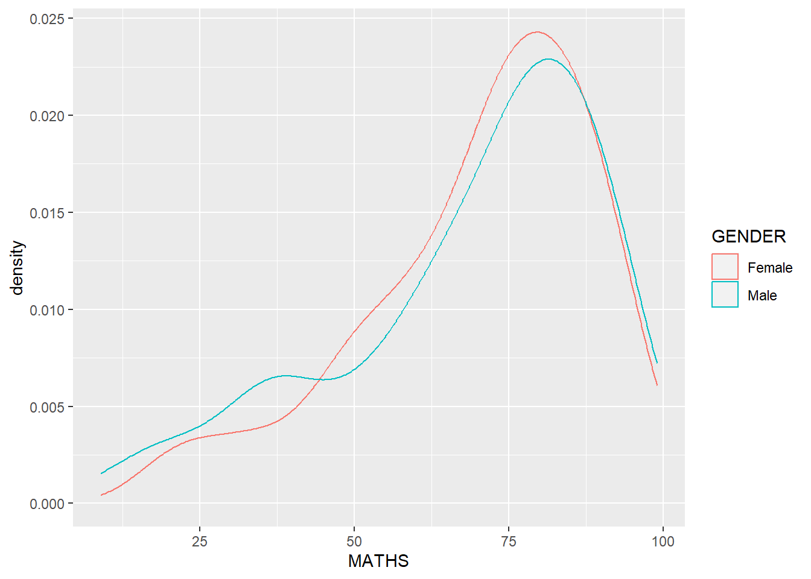
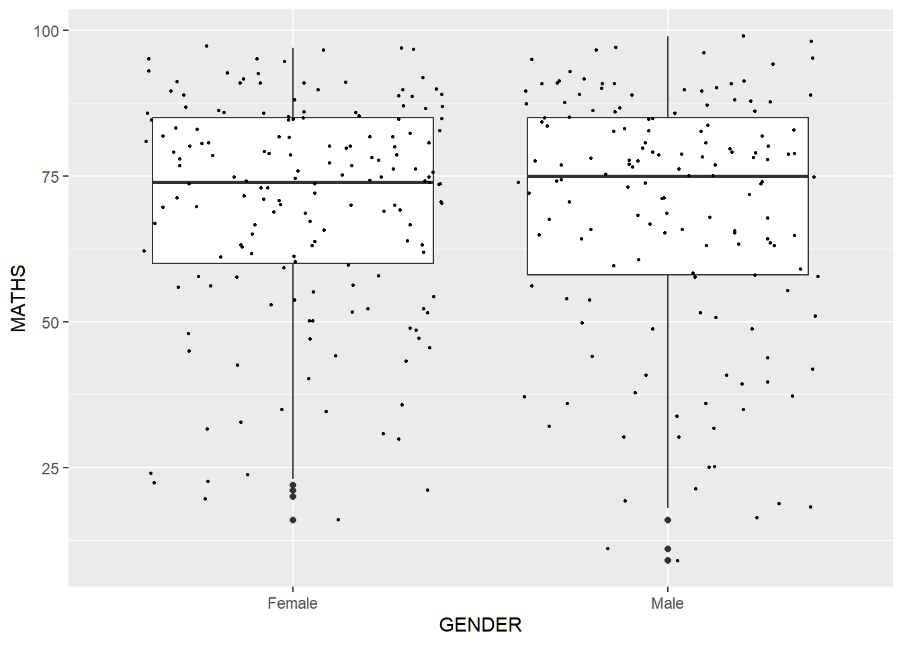

pacman::p_load(tidyverse)Hand-on Exercise 1
Exploring ggplot2 methods
Getting Started
Install and launching R packages
The code chunk below uses p_load() of pacman pacakge to check if tidyverse packages are installed in the comupter. If they are, then they will be launched into R.
Importing the data
exam_data <- read_csv("data/Exam_data.csv")Rows: 322 Columns: 7
── Column specification ────────────────────────────────────────────────────────
Delimiter: ","
chr (4): ID, CLASS, GENDER, RACE
dbl (3): ENGLISH, MATHS, SCIENCE
ℹ Use `spec()` to retrieve the full column specification for this data.
ℹ Specify the column types or set `show_col_types = FALSE` to quiet this message.Essential Grammatical Elements in ggplot2: geom
Plotting a simple bar chart
ggplot(data = exam_data,
aes(x = RACE)) +
geom_bar()
Modifying a geometric object by changing geom()
ggplot(data=exam_data,
aes(x= MATHS)) +
geom_histogram(bins = 20,
color="black",
fill= "light blue")
Modifying a geometric object by changing aes()
ggplot(data=exam_data,
aes(x= MATHS,
fill = GENDER)) +
geom_histogram(bins=20,
color="grey30")
Geometric Objects: geom_density()
This is a useful alternative to the histogram for continuous data that comes from an underlying smooth distribution.
ggplot(data=exam_data,
aes(x = MATHS)) +
geom_density() 
ggplot(data=exam_data,
aes(x = MATHS,
colour = GENDER)) +
geom_density()
Geometric Objects: geom_boxplot
ggplot(data=exam_data,
aes(y = MATHS,
x= GENDER)) +
geom_boxplot() 
Adding in notches
ggplot(data=exam_data,
aes(y = MATHS,
x= GENDER)) +
geom_boxplot(notch=TRUE)
Geometric Objects: geom_violin
ggplot(data=exam_data,
aes(y = MATHS,
x= GENDER)) +
geom_violin()
Geometric Objects: geom_point()
This is useful for creating scatterplot.
ggplot(data=exam_data,
aes(x= MATHS,
y=ENGLISH)) +
geom_point() 
geom objects can be combined
ggplot(data=exam_data,
aes(y = MATHS,
x= GENDER)) +
geom_boxplot() +
geom_point(position="jitter",
size = 0.5)
Essential Grammatical Elements in ggplot2: stat
Working with stat - the stat_summary() method
below code showing mean in red dots.
ggplot(data = exam_data,
aes(y = MATHS, x = GENDER)) +
geom_boxplot() +
stat_summary(geom = "point",
fun.y="mean",
colour ="red",
size=4) Warning: The `fun.y` argument of `stat_summary()` is deprecated as of ggplot2 3.3.0.
ℹ Please use the `fun` argument instead.
Working with stat - the geom() method
ggplot(data=exam_data,
aes(y = MATHS, x= GENDER)) +
geom_boxplot() +
geom_point(stat="summary",
fun.y="mean",
colour ="red",
size=4) Warning in geom_point(stat = "summary", fun.y = "mean", colour = "red", :
Ignoring unknown parameters: `fun.y`No summary function supplied, defaulting to `mean_se()`
Adding a best fit curve on a scatterplot
using geom_smooth(size=0.5)
ggplot(data=exam_data,
aes(x= MATHS, y=ENGLISH)) +
geom_point() +
geom_smooth(size=0.5)Warning: Using `size` aesthetic for lines was deprecated in ggplot2 3.4.0.
ℹ Please use `linewidth` instead.`geom_smooth()` using method = 'loess' and formula = 'y ~ x'
The default smoothing method (default is loess) can be overridden as shown below.
ggplot(data=exam_data,
aes(x= MATHS,
y=ENGLISH)) +
geom_point() +
geom_smooth(method=lm,
size=0.5)`geom_smooth()` using formula = 'y ~ x'